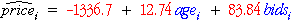

We next develop the method of least squares using matrices for a general linear model,

The residual sum of squares can also be expressed in terms of matrices,

Least squares estimates
The least squares estimates of the parameters are given by the vector b that minimises the sum of squared residuals.
The least squares estimates are therefore the solution to a mathematical minimisation problem that is relatively easily specified in terms of matrices — minimising
with respect to b . Note that the vector y and the matrix X contain known values. The solution to this mathematical problem is given by the equation,

Neither the proof nor the matrix equation for b are important for understanding how to use general linear models.
It is however important to observe that:
The same matrix equation provides least squares estimates for all general linear models.
We will also show that inference for all general linear models can be expressed in common terms.
Sale price of grandfather clocks
The selling prices at auction of 32 antique grandfather clocks were recorded, with the ages of the clocks and the number of people who made a bid. The least squares estimates of the parameters are shown in the equation below for the fitted values.

The matrices below shows the matrix equation for the residuals.
Any other values for the three parameter estimates would result in residuals with a greater sum of squares.